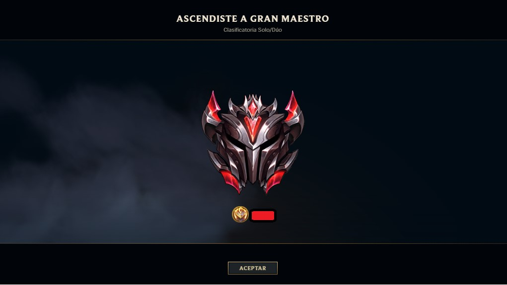

Clasificatoria Maestro.
Como salir de Maestro.
Gran Maestro es todo lo contrario, ya que se situará en la parte alta de la clasificación, justo entre Maestro y Aspirante. La motivación que subyace detrás de esta decisión es la gran diferencia de nivel que han observado entre los jugadores de las divisiones más altas de Diamante con los de las más bajas
Gran Maestro. Los 200 mejores jugadores del momento, por su parte, seguirán perteneciendo a la categoría Aspirante. Además, también han introducido un cambio interesante en las partes altas. Ahora los jugadores podrán ver, a la hora de conseguir el ascenso a Aspirante, a qué jugador van a sustituir y viceversa. "Este toque hará que las partidas resulten aún más competitivas cuando estéis a punto de subir o bajar", explican.
Clasificatoria Challengero